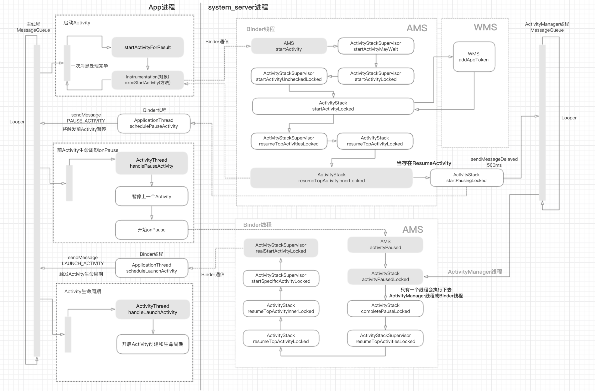

Android11 Activity启动流程
App进程启动Activity¶
Activity.startActivity()¶
http://aospxref.com/android-11.0.0_r21/xref/frameworks/base/core/java/android/app/Activity.java
@Override
public void startActivity(Intent intent) {
this.startActivity(intent, null);
}
@Override
public void startActivity(Intent intent, @Nullable Bundle options) {
...
if (options != null) {
startActivityForResult(intent, -1, options);
} else {
// Note we want to go through this call for compatibility with
// applications that may have overridden the method.
startActivityForResult(intent, -1);
}
}
@Override
@UnsupportedAppUsage
public void startActivityForResult(String who, Intent intent, int requestCode, @Nullable Bundle options) {
...
options = transferSpringboardActivityOptions(options);
Instrumentation.ActivityResult ar =
mInstrumentation.execStartActivity(
this, mMainThread.getApplicationThread(), mToken, who,
intent, requestCode, options);
if (ar != null) {
//返回结果
mMainThread.sendActivityResult(
mToken, who, requestCode,
ar.getResultCode(), ar.getResultData());
}
cancelInputsAndStartExitTransition(options);
}
- 调用Instrumentation.execStartActivity
Instrumentation.execStartActivity()¶
http://aospxref.com/android-11.0.0_r21/xref/frameworks/base/core/java/android/app/Instrumentation.java
@UnsupportedAppUsage
public ActivityResult execStartActivity(
Context who, IBinder contextThread, IBinder token, Activity target,
Intent intent, int requestCode, Bundle options) {
IApplicationThread whoThread = (IApplicationThread) contextThread;
...
try {
intent.migrateExtraStreamToClipData(who);
intent.prepareToLeaveProcess(who);
int result = ActivityTaskManager.getService().startActivity(whoThread,
who.getBasePackageName(), who.getAttributionTag(), intent,
intent.resolveTypeIfNeeded(who.getContentResolver()), token,
target != null ? target.mEmbeddedID : null, requestCode, 0, null, options);
checkStartActivityResult(result, intent);
} catch (RemoteException e) {
throw new RuntimeException("Failure from system", e);
}
return null;
}
这边都还是App进程，通过binder通信调用ActivityTaskManagerService(ATMS)服务。
获取ATMS服务¶
上面明明看到的是调用ActivityTaskManager.getService().startActivity(），那为什么就可以肯定就是调用ActivityTaskManagerService了呢？这里也简单的贴出片段代码供分析。
ActivityTaskManager¶
http://aospxref.com/android-11.0.0_r21/xref/frameworks/base/core/java/android/app/ActivityTaskManager.java
/** @hide */
public static IActivityTaskManager getService() {
return IActivityTaskManagerSingleton.get();
}
@UnsupportedAppUsage(trackingBug = 129726065)
private static final Singleton<IActivityTaskManager> IActivityTaskManagerSingleton =
new Singleton<IActivityTaskManager>() {
@Override
protected IActivityTaskManager create() {
final IBinder b = ServiceManager.getService(Context.ACTIVITY_TASK_SERVICE);
return IActivityTaskManager.Stub.asInterface(b);
}
};
- 获取这个服务ServiceManager.getService(Context.ACTIVITY_TASK_SERVICE)
http://aospxref.com/android-11.0.0_r21/xref/frameworks/base/core/java/android/content/Context.java#3793
/**
* Use with {@link #getSystemService(String)} to retrieve a
* {@link android.app.ActivityTaskManager} for interacting with the global system state.
*
* @see #getSystemService(String)
* @see android.app.ActivityTaskManager
* @hide
*/
public static final String ACTIVITY_TASK_SERVICE = "activity_task";
- AIDL接口是IActivityTaskManager，在aospxref上是看到是startActivity有接口的
ActivityTaskManagerService¶
public class ActivityTaskManagerService extends IActivityTaskManager.Stub {
public static final class Lifecycle extends SystemService {
private final ActivityTaskManagerService mService;
public Lifecycle(Context context) {
super(context);
mService = new ActivityTaskManagerService(context);
}
@Override
public void onStart() {
publishBinderService(Context.ACTIVITY_TASK_SERVICE, mService);
mService.start();
}
@Override
public void onUnlockUser(int userId) {
synchronized (mService.getGlobalLock()) {
mService.mStackSupervisor.onUserUnlocked(userId);
}
}
@Override
public void onCleanupUser(int userId) {
synchronized (mService.getGlobalLock()) {
mService.mStackSupervisor.mLaunchParamsPersister.onCleanupUser(userId);
}
}
public ActivityTaskManagerService getService() {
return mService;
}
}
}
关键代码publishBinderService(Context.ACTIVITY_TASK_SERVICE, mService);
如果熟悉安卓启动流程，其实就知道是在SystemServer.startBootstrapServices启动服务。
startBootstrapServices()¶
http://aospxref.com/android-11.0.0_r21/xref/frameworks/base/services/java/com/android/server/SystemServer.java#765
private void startBootstrapServices(@NonNull TimingsTraceAndSlog t) {
...
// Activity manager runs the show.
t.traceBegin("StartActivityManager");
// TODO: Might need to move after migration to WM.
ActivityTaskManagerService atm = mSystemServiceManager.startService(
ActivityTaskManagerService.Lifecycle.class).getService();
mActivityManagerService = ActivityManagerService.Lifecycle.startService(
mSystemServiceManager, atm);
mActivityManagerService.setSystemServiceManager(mSystemServiceManager);
mActivityManagerService.setInstaller(installer);
mWindowManagerGlobalLock = atm.getGlobalLock();
t.traceEnd();
...
}
- 启动ActivityTaskManagerService服务
mSystemServiceManager.startService(ActivityTaskManagerService.Lifecycle.class).getService()
- 启动ActivityManagerService
ActivityManagerService.Lifecycle.startService(mSystemServiceManager, atm)
public <T extends SystemService> T startService(Class<T> serviceClass) {
try {
final String name = serviceClass.getName();
final T service;
try {
Constructor<T> constructor = serviceClass.getConstructor(Context.class);
service = constructor.newInstance(mContext);
}
...
startService(service);
return service;
} finally {
Trace.traceEnd(Trace.TRACE_TAG_SYSTEM_SERVER);
}
}
public void startService(@NonNull final SystemService service) {
// Register it.
mServices.add(service);
// Start it.
long time = SystemClock.elapsedRealtime();
try {
service.onStart();
} catch (RuntimeException ex) {
...
}
}
- 注册
mServices.add(service)
- 启动
service.onStart()也就是前面提到的ActivityTaskManagerService.Lifecycle.onStart()，也就是publishBinderService(Context.ACTIVITY_TASK_SERVICE, mService);
流程¶
根据上面的代码分析，我们发现在启动Activity的初始阶段很简单。就是启动Activity的进程A一步一步调用SystemServer的ATMS服务接口的过程。
sequenceDiagram
Activity ->> Activity:startActivity
Activity ->> Activity:startActivityForResult()
Activity ->> Instrumentation:execStartActivity()
Instrumentation ->>+ ActivityTaskManager:getService()
ActivityTaskManager ->>+ ServiceManager:getService()
ServiceManager ->>+ BinderInternal:getContextObject()
BinderInternal ->>- ServiceManager:IServiceManager
ServiceManager ->>- ActivityTaskManager:IBinder
ActivityTaskManager ->>- Instrumentation:IActivityTaskManager
Instrumentation ->> ActivityTaskManagerService:startActivity()
SystemServer.ActivityTaskManagerService¶
ATMS¶
http://aospxref.com/android-11.0.0_r21/xref/frameworks/base/services/core/java/com/android/server/wm/ActivityTaskManagerService.java#1005
@Override
public final int startActivity(IApplicationThread caller, String callingPackage,
String callingFeatureId, Intent intent, String resolvedType, IBinder resultTo,
String resultWho, int requestCode, int startFlags, ProfilerInfo profilerInfo,
Bundle bOptions) {
return startActivityAsUser(caller, callingPackage, callingFeatureId, intent, resolvedType,
resultTo, resultWho, requestCode, startFlags, profilerInfo, bOptions,
UserHandle.getCallingUserId());
}
@Override
public int startActivityAsUser(IApplicationThread caller, String callingPackage,
String callingFeatureId, Intent intent, String resolvedType, IBinder resultTo,
String resultWho, int requestCode, int startFlags, ProfilerInfo profilerInfo,
Bundle bOptions, int userId) {
return startActivityAsUser(caller, callingPackage, callingFeatureId, intent, resolvedType,
resultTo, resultWho, requestCode, startFlags, profilerInfo, bOptions, userId,
true /*validateIncomingUser*/);
}
private int startActivityAsUser(IApplicationThread caller, String callingPackage,
@Nullable String callingFeatureId, Intent intent, String resolvedType,
IBinder resultTo, String resultWho, int requestCode, int startFlags,
ProfilerInfo profilerInfo, Bundle bOptions, int userId, boolean validateIncomingUser) {
assertPackageMatchesCallingUid(callingPackage);
enforceNotIsolatedCaller("startActivityAsUser");
userId = getActivityStartController().checkTargetUser(userId, validateIncomingUser,
Binder.getCallingPid(), Binder.getCallingUid(), "startActivityAsUser");
// TODO: Switch to user app stacks here.
return getActivityStartController().obtainStarter(intent, "startActivityAsUser")
.setCaller(caller)//调用方的AppThread的IBinder
.setCallingPackage(callingPackage)//调用方的包名
.setCallingFeatureId(callingFeatureId)//调用方的FeatureId
.setResolvedType(resolvedType)//调用type
.setResultTo(resultTo)//调用方的ActivityClientRecord的binder（实际上是AMS的ActivityRecord对应在App端的binder对象）
.setResultWho(resultWho)//调用方的标示
.setRequestCode(requestCode)//需要返回的requestCode
.setStartFlags(startFlags)//启动标志位
.setProfilerInfo(profilerInfo)//启动时带上的权限文件对象
.setActivityOptions(bOptions)//ActivityOptions的Activity的启动项
.setUserId(userId)//是否是同步打开Actvivity 默认一般是true
.execute();//执行方法。
}
ActivityStartController getActivityStartController() {
return mActivityStartController;
}
ActivityStarter.obtainStarter()¶
http://aospxref.com/android-11.0.0_r21/xref/frameworks/base/services/core/java/com/android/server/wm/ActivityStartController.java#149
ActivityStarter obtainStarter(Intent intent, String reason) {
return mFactory.obtain().setIntent(intent).setReason(reason);
}
http://aospxref.com/android-11.0.0_r21/xref/frameworks/base/services/core/java/com/android/server/wm/ActivityStarter.java
/**
* Controller for interpreting how and then launching an activity.
*
* This class collects all the logic for determining how an intent and flags should be turned into
* an activity and associated task and stack.
*/
class ActivityStarter {
interface Factory {
void setController(ActivityStartController controller);
ActivityStarter obtain();
void recycle(ActivityStarter starter);
}
static class DefaultFactory implements Factory {
@Override
public void setController(ActivityStartController controller) {
mController = controller;
}
@Override
public ActivityStarter obtain() {
ActivityStarter starter = mStarterPool.acquire();
if (starter == null) {
starter = new ActivityStarter(mController, mService, mSupervisor, mInterceptor);
}
return starter;
}
@Override
public void recycle(ActivityStarter starter) {
starter.reset(true /* clearRequest*/);
mStarterPool.release(starter);
}
}
ActivityStarter setIntentGrants(NeededUriGrants intentGrants) {
mRequest.intentGrants = intentGrants;
return this;
}
ActivityStarter setReason(String reason) {
mRequest.reason = reason;
return this;
}
ActivityStarter setCaller(IApplicationThread caller) {
mRequest.caller = caller;
return this;
}
ActivityStarter setResolvedType(String type) {
mRequest.resolvedType = type;
return this;
}
ActivityStarter setActivityInfo(ActivityInfo info) {
mRequest.activityInfo = info;
return this;
}
ActivityStarter setResolveInfo(ResolveInfo info) {
mRequest.resolveInfo = info;
return this;
}
ActivityStarter setVoiceSession(IVoiceInteractionSession voiceSession) {
mRequest.voiceSession = voiceSession;
return this;
}
ActivityStarter setVoiceInteractor(IVoiceInteractor voiceInteractor) {
mRequest.voiceInteractor = voiceInteractor;
return this;
}
ActivityStarter setResultTo(IBinder resultTo) {
mRequest.resultTo = resultTo;
return this;
}
ActivityStarter setResultWho(String resultWho) {
mRequest.resultWho = resultWho;
return this;
}
ActivityStarter setRequestCode(int requestCode) {
mRequest.requestCode = requestCode;
return this;
}
ActivityStarter setCallingPid(int pid) {
mRequest.callingPid = pid;
return this;
}
ActivityStarter setCallingUid(int uid) {
mRequest.callingUid = uid;
return this;
}
ActivityStarter setCallingPackage(String callingPackage) {
mRequest.callingPackage = callingPackage;
return this;
}
ActivityStarter setCallingFeatureId(String callingFeatureId) {
mRequest.callingFeatureId = callingFeatureId;
return this;
}
ActivityStarter setRealCallingPid(int pid) {
mRequest.realCallingPid = pid;
return this;
}
ActivityStarter setRealCallingUid(int uid) {
mRequest.realCallingUid = uid;
return this;
}
ActivityStarter setStartFlags(int startFlags) {
mRequest.startFlags = startFlags;
return this;
}
ActivityStarter setActivityOptions(SafeActivityOptions options) {
mRequest.activityOptions = options;
return this;
}
ActivityStarter setActivityOptions(Bundle bOptions) {
return setActivityOptions(SafeActivityOptions.fromBundle(bOptions));
}
ActivityStarter setIgnoreTargetSecurity(boolean ignoreTargetSecurity) {
mRequest.ignoreTargetSecurity = ignoreTargetSecurity;
return this;
}
ActivityStarter setFilterCallingUid(int filterCallingUid) {
mRequest.filterCallingUid = filterCallingUid;
return this;
}
ActivityStarter setComponentSpecified(boolean componentSpecified) {
mRequest.componentSpecified = componentSpecified;
return this;
}
ActivityStarter setOutActivity(ActivityRecord[] outActivity) {
mRequest.outActivity = outActivity;
return this;
}
ActivityStarter setInTask(Task inTask) {
mRequest.inTask = inTask;
return this;
}
ActivityStarter setWaitResult(WaitResult result) {
mRequest.waitResult = result;
return this;
}
ActivityStarter setProfilerInfo(ProfilerInfo info) {
mRequest.profilerInfo = info;
return this;
}
ActivityStarter setGlobalConfiguration(Configuration config) {
mRequest.globalConfig = config;
return this;
}
ActivityStarter setUserId(int userId) {
mRequest.userId = userId;
return this;
}
ActivityStarter setAllowPendingRemoteAnimationRegistryLookup(boolean allowLookup) {
mRequest.allowPendingRemoteAnimationRegistryLookup = allowLookup;
return this;
}
ActivityStarter setOriginatingPendingIntent(PendingIntentRecord originatingPendingIntent) {
mRequest.originatingPendingIntent = originatingPendingIntent;
return this;
}
ActivityStarter setAllowBackgroundActivityStart(boolean allowBackgroundActivityStart) {
mRequest.allowBackgroundActivityStart = allowBackgroundActivityStart;
return this;
}
}
虽然看起来像是一个建造者设计模式。但是实际上工厂设计模式+享元设计+链式调用。通过obtainStarter把DefaultFactory从mStarterPool中获取一个ActivityStarter(池子中最多设置3个)，接着通过链式调用，把启动时需要的参数传递进去。
当设置完成之后，我们直接看看execute方法。
ActivityStarter.execute()¶
http://aospxref.com/android-11.0.0_r21/xref/frameworks/base/services/core/java/com/android/server/wm/ActivityStarter.java
/**
* Resolve necessary information according the request parameters provided earlier, and execute
* the request which begin the journey of starting an activity.
* @return The starter result.
*/
int execute() {
try {
...
if (mRequest.activityInfo == null) {
mRequest.resolveActivity(mSupervisor);
}
int res;
synchronized (mService.mGlobalLock) {
...
res = executeRequest(mRequest);
Binder.restoreCallingIdentity(origId);
...
// Notify ActivityMetricsLogger that the activity has launched.
// ActivityMetricsLogger will then wait for the windows to be drawn and populate
// WaitResult.
mSupervisor.getActivityMetricsLogger().notifyActivityLaunched(launchingState, res,
mLastStartActivityRecord);
return getExternalResult(mRequest.waitResult == null ? res
: waitForResult(res, mLastStartActivityRecord));
}
} finally {
onExecutionComplete();
}
}
/**
* Executing activity start request and starts the journey of starting an activity. Here
* begins with performing several preliminary checks. The normally activity launch flow will
* go through {@link #startActivityUnchecked} to {@link #startActivityInner}.
*/
private int executeRequest(Request request) {
...
ActivityInfo aInfo = request.activityInfo;
ResolveInfo rInfo = request.resolveInfo;
...
String resultWho = request.resultWho;
...
Task inTask = request.inTask;
...
ActivityRecord sourceRecord = null;
ActivityRecord resultRecord = null;
if (resultTo != null) {
sourceRecord = mRootWindowContainer.isInAnyStack(resultTo);
...
if (sourceRecord != null) {
if (requestCode >= 0 && !sourceRecord.finishing) {
resultRecord = sourceRecord;
}
}
}
...
//检查启动activity的权限
boolean abort = !mSupervisor.checkStartAnyActivityPermission(intent, aInfo, resultWho,
requestCode, callingPid, callingUid, callingPackage, callingFeatureId,
request.ignoreTargetSecurity, inTask != null, callerApp, resultRecord, resultStack);
abort |= !mService.mIntentFirewall.checkStartActivity(intent, callingUid,
callingPid, resolvedType, aInfo.applicationInfo);
abort |= !mService.getPermissionPolicyInternal().checkStartActivity(intent, callingUid,
callingPackage);
boolean restrictedBgActivity = false;
if (!abort) {
try {
...
//检查是否允许后台启动activity
restrictedBgActivity = shouldAbortBackgroundActivityStart(callingUid,
callingPid, callingPackage, realCallingUid, realCallingPid, callerApp,
request.originatingPendingIntent, request.allowBackgroundActivityStart,
intent);
} finally {
...
}
}
...
// 如果权限需要审核才能运行任何应用程序组件，则启动审核
if (aInfo != null) {
//获取此包使用的某些权限是否需要用户审核才能运行任何应用程序组件。
if (mService.getPackageManagerInternalLocked().isPermissionsReviewRequired(
aInfo.packageName, userId)) {
//启动权限审核
...
Intent newIntent = new Intent(Intent.ACTION_REVIEW_PERMISSIONS);
...
intent = newIntent;
...
}
}
//创建ActivityRecord对象
final ActivityRecord r = new ActivityRecord(mService, callerApp, callingPid, callingUid,
callingPackage, callingFeatureId, intent, resolvedType, aInfo,
mService.getGlobalConfiguration(), resultRecord, resultWho, requestCode,
request.componentSpecified, voiceSession != null, mSupervisor, checkedOptions,
sourceRecord);
mLastStartActivityRecord = r;
if (r.appTimeTracker == null && sourceRecord != null) {
// If the caller didn't specify an explicit time tracker, we want to continue
// tracking under any it has.
r.appTimeTracker = sourceRecord.appTimeTracker;
}
final ActivityStack stack = mRootWindowContainer.getTopDisplayFocusedStack();
// If we are starting an activity that is not from the same uid as the currently resumed
// one, check whether app switches are allowed.
if (voiceSession == null && stack != null && (stack.getResumedActivity() == null
|| stack.getResumedActivity().info.applicationInfo.uid != realCallingUid)) {
if (!mService.checkAppSwitchAllowedLocked(callingPid, callingUid,
realCallingPid, realCallingUid, "Activity start")) {
if (!(restrictedBgActivity && handleBackgroundActivityAbort(r))) {
mController.addPendingActivityLaunch(new PendingActivityLaunch(r,
sourceRecord, startFlags, stack, callerApp, intentGrants));
}
ActivityOptions.abort(checkedOptions);
return ActivityManager.START_SWITCHES_CANCELED;
}
}
mService.onStartActivitySetDidAppSwitch();
mController.doPendingActivityLaunches(false);
//进入启动activity的流程（跳过检查）
mLastStartActivityResult = startActivityUnchecked(r, sourceRecord, voiceSession,
request.voiceInteractor, startFlags, true /* doResume */, checkedOptions, inTask,
restrictedBgActivity, intentGrants);
if (request.outActivity != null) {
request.outActivity[0] = mLastStartActivityRecord;
}
return mLastStartActivityResult;
}
- 调用mRequest.resolveActivity(mSupervisor)初始化request.activityInfo
- resultTo对应的就是ATMS中的setResultTo(resultTo)//调用方的ActivityClientRecord的binder（实际上是AMS的ActivityRecord对应在App端的binder对象）
- 检查启动activity的权限
shouldAbortBackgroundActivityStart()里面主要处理是否允许后台启动activity的逻辑（高版本对service启动activity做了限制，防止广告泛滥），以下情况会允许后台启动activity
- 一些重要的UId比如System UID，NFC UID
- callingUid具有可见窗口或是持久性系统进程（即persistent的系统进程）
- callingUid具有START_ACTIVITIES_FROM_BACKGROUND权限
- 调用方的uid与最近使用的组件具有相同的uid
- callingUid是设备所有者或者有伴侣设备
- callingUid具有SYSTEM_ALERT_WINDOW权限
- 调用者在任何前台任务中有活动
-
调用者被当前前台的 UID 绑定
-
new一个ActivityRecord，它就是要被启动的Activity
ActivityStarter.startActivityUnchecked()¶
http://aospxref.com/android-11.0.0_r21/xref/frameworks/base/services/core/java/com/android/server/wm/ActivityStarter.java
private int startActivityUnchecked(final ActivityRecord r, ActivityRecord sourceRecord,
IVoiceInteractionSession voiceSession, IVoiceInteractor voiceInteractor,
int startFlags, boolean doResume, ActivityOptions options, Task inTask,
boolean restrictedBgActivity, NeededUriGrants intentGrants) {
int result = START_CANCELED;
final ActivityStack startedActivityStack;
try {
mService.deferWindowLayout();
...
result = startActivityInner(r, sourceRecord, voiceSession, voiceInteractor,
startFlags, doResume, options, inTask, restrictedBgActivity, intentGrants);
} finally {
...
startedActivityStack = handleStartResult(r, result);
mService.continueWindowLayout();
}
postStartActivityProcessing(r, result, startedActivityStack);
return result;
}
在大多数初步检查都已完成并且已确认拥有必要的权限的情况下，开始Activity
- 如果启动失败，这里还可以确保删除启动活动。
- 如果启动成功，请确保启动活动的配置与当前显示匹配。否则清理不相关的容器以避免泄漏。
继续看startActivityInner
ActivityStarter.startActivityInner()¶
http://aospxref.com/android-11.0.0_r21/xref/frameworks/base/services/core/java/com/android/server/wm/ActivityStarter.java
int startActivityInner(final ActivityRecord r, ActivityRecord sourceRecord,
IVoiceInteractionSession voiceSession, IVoiceInteractor voiceInteractor,
int startFlags, boolean doResume, ActivityOptions options, Task inTask,
boolean restrictedBgActivity, NeededUriGrants intentGrants) {
//把整个参数赋值给ActivityStarter的全局变量，以供之后所有的流程使用
setInitialState(r, options, inTask, doResume, startFlags, sourceRecord, voiceSession,
voiceInteractor, restrictedBgActivity);
computeLaunchingTaskFlags();
//初始化mSourceStack，它是一个ActivityTask
computeSourceStack();
mIntent.setFlags(mLaunchFlags);
//reusedTask = null
final Task reusedTask = getReusableTask();
...
//targetTask为ActivitA的task
final Task targetTask = reusedTask != null ? reusedTask : computeTargetTask();
final boolean newTask = targetTask == null;
mTargetTask = targetTask;
//初始化启动的参数
computeLaunchParams(r, sourceRecord, targetTask);
...
final ActivityRecord targetTaskTop = newTask
? null : targetTask.getTopNonFinishingActivity();
if (targetTaskTop != null) {
//设置targetStack，
startResult = recycleTask(targetTask, targetTaskTop, reusedTask, intentGrants);
if (startResult != START_SUCCESS) {
return startResult;
}
} else {
mAddingToTask = true;
}
...
if (newTask) {
...
} else if (mAddingToTask) {
//要启动的activity加到属于自己的task里
addOrReparentStartingActivity(targetTask, "adding to task");
}
if (!mAvoidMoveToFront && mDoResume) {
//把要启动的Activity所在的Task，targetTask，设置在WindowContainer的最上层
mTargetStack.getStack().moveToFront("reuseOrNewTask", targetTask);
if (mOptions != null) {
if (mOptions.getTaskAlwaysOnTop()) {
mTargetStack.setAlwaysOnTop(true);
}
}
...
}
...
//通知WindowManager准备App切换相关的工作
mTargetStack.startActivityLocked(mStartActivity,
topStack != null ? topStack.getTopNonFinishingActivity() : null, newTask,
mKeepCurTransition, mOptions);
...
if (mDoResume) {
final ActivityRecord topTaskActivity =
mStartActivity.getTask().topRunningActivityLocked();
if (!mTargetStack.isTopActivityFocusable()
|| (topTaskActivity != null && topTaskActivity.isTaskOverlay()
&& mStartActivity != topTaskActivity)) {
mTargetStack.ensureActivitiesVisible(null /* starting */,
0 /* configChanges */, !PRESERVE_WINDOWS);
mTargetStack.getDisplay().mDisplayContent.executeAppTransition();
} else {
if (mTargetStack.isTopActivityFocusable()
&& !mRootWindowContainer.isTopDisplayFocusedStack(mTargetStack)) {
mTargetStack.moveToFront("startActivityInner");
}
//获取栈顶activity并恢复，即将设置成resume状态
mRootWindowContainer.resumeFocusedStacksTopActivities(
mTargetStack, mStartActivity, mOptions);
}
}
mRootWindowContainer.updateUserStack(mStartActivity.mUserId, mTargetStack);
// Update the recent tasks list immediately when the activity starts
mSupervisor.mRecentTasks.add(mStartActivity.getTask());
mSupervisor.handleNonResizableTaskIfNeeded(mStartActivity.getTask(),
mPreferredWindowingMode, mPreferredTaskDisplayArea, mTargetStack);
return START_SUCCESS;
}
这个函数比较长，我们着重从以下9个方面进行分析。
例子¶
以下代码分析都以以ActivitA启动ActivityB为例，即：
startActivity(new Intent(ActivityA.this,ActivityB.class))
1. setInitialState()¶
http://aospxref.com/android-11.0.0_r21/xref/frameworks/base/services/core/java/com/android/server/wm/ActivityStarter.java
private void setInitialState(ActivityRecord r, ActivityOptions options, Task inTask,
boolean doResume, int startFlags, ActivityRecord sourceRecord,
IVoiceInteractionSession voiceSession, IVoiceInteractor voiceInteractor,
boolean restrictedBgActivity) {
reset(false /* clearRequest */);
mStartActivity = r;
mIntent = r.intent;
mOptions = options;
mCallingUid = r.launchedFromUid;
mSourceRecord = sourceRecord;
mVoiceSession = voiceSession;
mVoiceInteractor = voiceInteractor;
mRestrictedBgActivity = restrictedBgActivity;
mLaunchParams.reset();
// Preferred display id is the only state we need for now and it could be updated again
// after we located a reusable task (which might be resided in another display).
mSupervisor.getLaunchParamsController().calculate(inTask, r.info.windowLayout, r,
sourceRecord, options, PHASE_DISPLAY, mLaunchParams);
mPreferredTaskDisplayArea = mLaunchParams.hasPreferredTaskDisplayArea()
? mLaunchParams.mPreferredTaskDisplayArea
: mRootWindowContainer.getDefaultTaskDisplayArea();
mPreferredWindowingMode = mLaunchParams.mWindowingMode;
mLaunchMode = r.launchMode;
mLaunchFlags = adjustLaunchFlagsToDocumentMode(
r, LAUNCH_SINGLE_INSTANCE == mLaunchMode,
LAUNCH_SINGLE_TASK == mLaunchMode, mIntent.getFlags());
mLaunchTaskBehind = r.mLaunchTaskBehind
&& !isLaunchModeOneOf(LAUNCH_SINGLE_TASK, LAUNCH_SINGLE_INSTANCE)
&& (mLaunchFlags & FLAG_ACTIVITY_NEW_DOCUMENT) != 0;
sendNewTaskResultRequestIfNeeded();
if ((mLaunchFlags & FLAG_ACTIVITY_NEW_DOCUMENT) != 0 && r.resultTo == null) {
mLaunchFlags |= FLAG_ACTIVITY_NEW_TASK;
}
// If we are actually going to launch in to a new task, there are some cases where
// we further want to do multiple task.
if ((mLaunchFlags & FLAG_ACTIVITY_NEW_TASK) != 0) {
if (mLaunchTaskBehind
|| r.info.documentLaunchMode == DOCUMENT_LAUNCH_ALWAYS) {
mLaunchFlags |= FLAG_ACTIVITY_MULTIPLE_TASK;
}
}
// We'll invoke onUserLeaving before onPause only if the launching
// activity did not explicitly state that this is an automated launch.
mSupervisor.mUserLeaving = (mLaunchFlags & FLAG_ACTIVITY_NO_USER_ACTION) == 0;
if (DEBUG_USER_LEAVING) Slog.v(TAG_USER_LEAVING,
"startActivity() => mUserLeaving=" + mSupervisor.mUserLeaving);
// If the caller has asked not to resume at this point, we make note
// of this in the record so that we can skip it when trying to find
// the top running activity.
mDoResume = doResume;
if (!doResume || !r.okToShowLocked() || mLaunchTaskBehind) {
r.delayedResume = true;
mDoResume = false;
}
if (mOptions != null) {
if (mOptions.getLaunchTaskId() != INVALID_TASK_ID && mOptions.getTaskOverlay()) {
r.setTaskOverlay(true);
if (!mOptions.canTaskOverlayResume()) {
final Task task = mRootWindowContainer.anyTaskForId(
mOptions.getLaunchTaskId());
final ActivityRecord top = task != null
? task.getTopNonFinishingActivity() : null;
if (top != null && !top.isState(RESUMED)) {
// The caller specifies that we'd like to be avoided to be moved to the
// front, so be it!
mDoResume = false;
mAvoidMoveToFront = true;
}
}
} else if (mOptions.getAvoidMoveToFront()) {
mDoResume = false;
mAvoidMoveToFront = true;
}
}
mNotTop = (mLaunchFlags & FLAG_ACTIVITY_PREVIOUS_IS_TOP) != 0 ? sourceRecord : null;
mInTask = inTask;
// In some flows in to this function, we retrieve the task record and hold on to it
// without a lock before calling back in to here... so the task at this point may
// not actually be in recents. Check for that, and if it isn't in recents just
// consider it invalid.
if (inTask != null && !inTask.inRecents) {
Slog.w(TAG, "Starting activity in task not in recents: " + inTask);
mInTask = null;
}
mStartFlags = startFlags;
// If the onlyIfNeeded flag is set, then we can do this if the activity being launched
// is the same as the one making the call... or, as a special case, if we do not know
// the caller then we count the current top activity as the caller.
if ((startFlags & START_FLAG_ONLY_IF_NEEDED) != 0) {
ActivityRecord checkedCaller = sourceRecord;
if (checkedCaller == null) {
ActivityStack topFocusedStack = mRootWindowContainer.getTopDisplayFocusedStack();
if (topFocusedStack != null) {
checkedCaller = topFocusedStack.topRunningNonDelayedActivityLocked(mNotTop);
}
}
if (checkedCaller == null
|| !checkedCaller.mActivityComponent.equals(r.mActivityComponent)) {
// Caller is not the same as launcher, so always needed.
mStartFlags &= ~START_FLAG_ONLY_IF_NEEDED;
}
}
mNoAnimation = (mLaunchFlags & FLAG_ACTIVITY_NO_ANIMATION) != 0;
if (mRestrictedBgActivity && !mService.isBackgroundActivityStartsEnabled()) {
mAvoidMoveToFront = true;
mDoResume = false;
}
}
把整个参数赋值给ActivityStarter的全局变量，以供之后所有的流程使用。还有一些比如判断VR模式等等，跟启动activity关系不大，暂不展开阐述。
2. computeSourceStack()¶
http://aospxref.com/android-11.0.0_r21/xref/frameworks/base/services/core/java/com/android/server/wm/ActivityStarter.java
private void computeSourceStack() {
if (mSourceRecord == null) {
mSourceStack = null;
return;
}
if (!mSourceRecord.finishing) {//标记1
mSourceStack = mSourceRecord.getRootTask();
return;
}
...
}
逻辑在“标记1”就return了。说明当前ActivityB的source Task就是sourceRecord的task，即ActivityA所在的task。
3. getReusableTask¶
http://aospxref.com/android-11.0.0_r21/xref/frameworks/base/services/core/java/com/android/server/wm/ActivityStarter.java
/**
* Decide whether the new activity should be inserted into an existing task. Returns null
* if not or an ActivityRecord with the task into which the new activity should be added.
*/
private Task getReusableTask() {
// If a target task is specified, try to reuse that one
if (mOptions != null && mOptions.getLaunchTaskId() != INVALID_TASK_ID) {
Task launchTask = mRootWindowContainer.anyTaskForId(mOptions.getLaunchTaskId());
if (launchTask != null) {
return launchTask;
}
return null;
}
// We may want to try to place the new activity in to an existing task. We always
// do this if the target activity is singleTask or singleInstance; we will also do
// this if NEW_TASK has been requested, and there is not an additional qualifier telling
// us to still place it in a new task: multi task, always doc mode, or being asked to
// launch this as a new task behind the current one.
boolean putIntoExistingTask = ((mLaunchFlags & FLAG_ACTIVITY_NEW_TASK) != 0 &&
(mLaunchFlags & FLAG_ACTIVITY_MULTIPLE_TASK) == 0)
|| isLaunchModeOneOf(LAUNCH_SINGLE_INSTANCE, LAUNCH_SINGLE_TASK);
// If bring to front is requested, and no result is requested and we have not been given
// an explicit task to launch in to, and we can find a task that was started with this
// same component, then instead of launching bring that one to the front.
putIntoExistingTask &= mInTask == null && mStartActivity.resultTo == null;
ActivityRecord intentActivity = null;
if (putIntoExistingTask) {
if (LAUNCH_SINGLE_INSTANCE == mLaunchMode) {
// There can be one and only one instance of single instance activity in the
// history, and it is always in its own unique task, so we do a special search.
intentActivity = mRootWindowContainer.findActivity(mIntent, mStartActivity.info,
mStartActivity.isActivityTypeHome());
} else if ((mLaunchFlags & FLAG_ACTIVITY_LAUNCH_ADJACENT) != 0) {
// For the launch adjacent case we only want to put the activity in an existing
// task if the activity already exists in the history.
intentActivity = mRootWindowContainer.findActivity(mIntent, mStartActivity.info,
!(LAUNCH_SINGLE_TASK == mLaunchMode));
} else {
// Otherwise find the best task to put the activity in.
intentActivity =
mRootWindowContainer.findTask(mStartActivity, mPreferredTaskDisplayArea);
}
}
if (intentActivity != null
&& (mStartActivity.isActivityTypeHome() || intentActivity.isActivityTypeHome())
&& intentActivity.getDisplayArea() != mPreferredTaskDisplayArea) {
// Do not reuse home activity on other display areas.
intentActivity = null;
}
return intentActivity != null ? intentActivity.getTask() : null;
}
从注释其实就能看出来了，查找栈中是否已有可复用的activity，如果没有再看是否有对应合适的栈。根据我们例子代码可知，reusedTask为null。
4. computeTargetTask¶
http://aospxref.com/android-11.0.0_r21/xref/frameworks/base/services/core/java/com/android/server/wm/ActivityStarter.java
private Task computeTargetTask() {
if (mStartActivity.resultTo == null && mInTask == null && !mAddingToTask
&& (mLaunchFlags & FLAG_ACTIVITY_NEW_TASK) != 0) {
// A new task should be created instead of using existing one.
return null;
} else if (mSourceRecord != null) {//标记2
return mSourceRecord.getTask();
} else if (mInTask != null) {
return mInTask;
} else {
final ActivityStack stack = getLaunchStack(mStartActivity, mLaunchFlags,
null /* task */, mOptions);
final ActivityRecord top = stack.getTopNonFinishingActivity();
if (top != null) {
return top.getTask();
} else {
// Remove the stack if no activity in the stack.
stack.removeIfPossible();
}
}
return null;
}
根据前面分析resultTo不为null，mSourceRecord不为Null，因此会走到“标记2”的逻辑，即return sourceRecord的task，也就是说返回ActivitA的task. 即targetTask为ActivitA的task。
5. computeLaunchParams¶
http://aospxref.com/android-11.0.0_r21/xref/frameworks/base/services/core/java/com/android/server/wm/ActivityStarter.java
private void computeLaunchParams(ActivityRecord r, ActivityRecord sourceRecord,
Task targetTask) {
final ActivityStack sourceStack = mSourceStack != null ? mSourceStack
: mRootWindowContainer.getTopDisplayFocusedStack();
if (sourceStack != null && sourceStack.inSplitScreenWindowingMode()
&& (mOptions == null
|| mOptions.getLaunchWindowingMode() == WINDOWING_MODE_UNDEFINED)) {
int windowingMode =
targetTask != null ? targetTask.getWindowingMode() : WINDOWING_MODE_UNDEFINED;
if ((mLaunchFlags & FLAG_ACTIVITY_LAUNCH_ADJACENT) != 0) {
if (sourceStack.inSplitScreenPrimaryWindowingMode()) {
windowingMode = WINDOWING_MODE_SPLIT_SCREEN_SECONDARY;
} else if (sourceStack.inSplitScreenSecondaryWindowingMode()) {
windowingMode = WINDOWING_MODE_SPLIT_SCREEN_PRIMARY;
}
}
if (mOptions == null) {
mOptions = ActivityOptions.makeBasic();
}
mOptions.setLaunchWindowingMode(windowingMode);
}
//标记3
mSupervisor.getLaunchParamsController().calculate(targetTask, r.info.windowLayout, r,
sourceRecord, mOptions, PHASE_BOUNDS, mLaunchParams);
mPreferredTaskDisplayArea = mLaunchParams.hasPreferredTaskDisplayArea()
? mLaunchParams.mPreferredTaskDisplayArea
: mRootWindowContainer.getDefaultTaskDisplayArea();
mPreferredWindowingMode = mLaunchParams.mWindowingMode;
}
初始化启动的参数，从方法的内容看主要是在初始化mPreferredWindowingMode，即WindowMode。
- mOptions.getLaunchWindowingMode()
返回ActivityOption，也就是有关于window mode的设置
-
mSupervisor.getLaunchParamsController().calculate()
-
mSupervisor就是ActivityStackSupervisor
- getLaunchParamsController()返回LaunchParamsController
- calculate()
实际上获取注册在LaunchParamsController中LaunchParamsModifier进行计算其表现在屏幕上的区域。实际上最基础有两个LaunchParamsModifier。
真正控制窗口大小变化(修改TaskRecord的Rect值，位置)
将当前的区域大小
实际上在ActivityOptions的setLaunchBounds中能够控制新建的Activity的窗体大小和位置。
6. recycleTask¶
http://aospxref.com/android-11.0.0_r21/xref/frameworks/base/services/core/java/com/android/server/wm/ActivityStarter.java
int recycleTask(Task targetTask, ActivityRecord targetTaskTop, Task reusedTask,
NeededUriGrants intentGrants) {
...
setTargetStackIfNeeded(targetTaskTop);
...
if (mAddingToTask) {
return START_SUCCESS;
}
...
}
- 通过函数setTargetStackIfNeeded设置targetStack，
- return START_SUCCESS 即 mAddingToTask为true
7. addOrReparentStartingActivity¶
http://aospxref.com/android-11.0.0_r21/xref/frameworks/base/services/core/java/com/android/server/wm/ActivityStarter.java
private void addOrReparentStartingActivity(Task parent, String reason) {
//parent为上面创建的TaskRecord，这里由于未指定inTask，所以mStartActivity.getTask()返回null
if (mStartActivity.getTask() == null || mStartActivity.getTask() == parent) {
//调用TaskRecord的addActivityToTop函数将待启动的Activity插入到TaskRecord中的mActivities的顶部
parent.addChild(mStartActivity);
} else {
mStartActivity.reparent(parent, parent.getChildCount() /* top */, reason);
}
}
调用TaskRecord的addActivityToTop函数将待启动的Activity插入到TaskRecord中的mActivities的顶部。
8. moveToFront¶
在ActivityStarter.startActivityInner
函数里调用了mTargetStack.getStack().moveToFront("reuseOrNewTask", targetTask);
mTargetStack是ActivityStack
http://aospxref.com/android-11.0.0_r21/xref/frameworks/base/services/core/java/com/android/server/wm/ActivityStack.java
class ActivityStack extends Task {
}
http://aospxref.com/android-11.0.0_r21/xref/frameworks/base/services/core/java/com/android/server/wm/Task.java#2614
class Task extends WindowContainer<WindowContainer> {
int getRootTaskId() {
return getRootTask().mTaskId;
}
}
所以真正调用的是ActivityStack.moveToFront
http://aospxref.com/android-11.0.0_r21/xref/frameworks/base/services/core/java/com/android/server/wm/ActivityStack.java
void moveToFront(String reason) {
moveToFront(reason, null);
}
/**
* @param reason The reason for moving the stack to the front.
* @param task If non-null, the task will be moved to the top of the stack.
* */
void moveToFront(String reason, Task task) {
if (!isAttached()) {
return;
}
final TaskDisplayArea taskDisplayArea = getDisplayArea();
...
if (isRootTask()) {
taskDisplayArea.positionStackAtTop(this, false /* includingParents */, reason);
}
if (task == null) {
task = this;
}
task.getParent().positionChildAt(POSITION_TOP, task, true /* includingParents */);
}
- 获得显示区域taskDisplayArea
- 把要启动的Activity所在的Task，targetTask，设置在显示区域taskDisplayArea的最上层
- task.getParent()，获得一个WindowContainer
- 把要启动的Activity所在的Task，targetTask，设置在WindowContainer的最上层
9. ActivityStack.startActivityLocked()¶
http://aospxref.com/android-11.0.0_r21/xref/frameworks/base/services/core/java/com/android/server/wm/ActivityStack.java
void startActivityLocked(ActivityRecord r, @Nullable ActivityRecord focusedTopActivity,
boolean newTask, boolean keepCurTransition, ActivityOptions options) {
Task rTask = r.getTask();
final boolean allowMoveToFront = options == null || !options.getAvoidMoveToFront();
final boolean isOrhasTask = rTask == this || hasChild(rTask);
// mLaunchTaskBehind tasks get placed at the back of the task stack.
if (!r.mLaunchTaskBehind && allowMoveToFront && (!isOrhasTask || newTask)) {
// Last activity in task had been removed or ActivityManagerService is reusing task.
// Insert or replace.
// Might not even be in.
positionChildAtTop(rTask);
}
Task task = null;
if (!newTask && isOrhasTask) {
// Starting activity cannot be occluding activity, otherwise starting window could be
// remove immediately without transferring to starting activity.
final ActivityRecord occludingActivity = getOccludingActivityAbove(r);
if (occludingActivity != null) {
// Here it is! Now, if this is not yet visible (occluded by another task) to the
// user, then just add it without starting; it will get started when the user
// navigates back to it.
if (DEBUG_ADD_REMOVE) Slog.i(TAG, "Adding activity " + r + " to task " + task,
new RuntimeException("here").fillInStackTrace());
rTask.positionChildAtTop(r);
ActivityOptions.abort(options);
return;
}
}
// Place a new activity at top of stack, so it is next to interact with the user.
// If we are not placing the new activity frontmost, we do not want to deliver the
// onUserLeaving callback to the actual frontmost activity
final Task activityTask = r.getTask();
if (task == activityTask && mChildren.indexOf(task) != (getChildCount() - 1)) {
mStackSupervisor.mUserLeaving = false;
if (DEBUG_USER_LEAVING) Slog.v(TAG_USER_LEAVING,
"startActivity() behind front, mUserLeaving=false");
}
task = activityTask;
// Slot the activity into the history stack and proceed
if (DEBUG_ADD_REMOVE) Slog.i(TAG, "Adding activity " + r + " to stack to task " + task,
new RuntimeException("here").fillInStackTrace());
task.positionChildAtTop(r);
// The transition animation and starting window are not needed if {@code allowMoveToFront}
// is false, because the activity won't be visible.
if ((!isHomeOrRecentsStack() || hasActivity()) && allowMoveToFront) {
final DisplayContent dc = getDisplay().mDisplayContent;
if (DEBUG_TRANSITION) Slog.v(TAG_TRANSITION,
"Prepare open transition: starting " + r);
if ((r.intent.getFlags() & Intent.FLAG_ACTIVITY_NO_ANIMATION) != 0) {
dc.prepareAppTransition(TRANSIT_NONE, keepCurTransition);
mStackSupervisor.mNoAnimActivities.add(r);
} else {
int transit = TRANSIT_ACTIVITY_OPEN;
if (newTask) {
if (r.mLaunchTaskBehind) {
transit = TRANSIT_TASK_OPEN_BEHIND;
} else if (getDisplay().isSingleTaskInstance()) {
// If a new task is being launched in a single task display, we don't need
// to play normal animation, but need to trigger a callback when an app
// transition is actually handled. So ignore already prepared activity, and
// override it.
transit = TRANSIT_SHOW_SINGLE_TASK_DISPLAY;
keepCurTransition = false;
} else {
// If a new task is being launched, then mark the existing top activity as
// supporting picture-in-picture while pausing only if the starting activity
// would not be considered an overlay on top of the current activity
// (eg. not fullscreen, or the assistant)
if (canEnterPipOnTaskSwitch(focusedTopActivity,
null /* toFrontTask */, r, options)) {
focusedTopActivity.supportsEnterPipOnTaskSwitch = true;
}
transit = TRANSIT_TASK_OPEN;
}
}
dc.prepareAppTransition(transit, keepCurTransition);
mStackSupervisor.mNoAnimActivities.remove(r);
}
boolean doShow = true;
if (newTask) {
// Even though this activity is starting fresh, we still need
// to reset it to make sure we apply affinities to move any
// existing activities from other tasks in to it.
// If the caller has requested that the target task be
// reset, then do so.
if ((r.intent.getFlags() & Intent.FLAG_ACTIVITY_RESET_TASK_IF_NEEDED) != 0) {
resetTaskIfNeeded(r, r);
doShow = topRunningNonDelayedActivityLocked(null) == r;
}
} else if (options != null && options.getAnimationType()
== ActivityOptions.ANIM_SCENE_TRANSITION) {
doShow = false;
}
if (r.mLaunchTaskBehind) {
// Don't do a starting window for mLaunchTaskBehind. More importantly make sure we
// tell WindowManager that r is visible even though it is at the back of the stack.
r.setVisibility(true);
ensureActivitiesVisible(null, 0, !PRESERVE_WINDOWS);
// Go ahead to execute app transition for this activity since the app transition
// will not be triggered through the resume channel.
getDisplay().mDisplayContent.executeAppTransition();
} else if (SHOW_APP_STARTING_PREVIEW && doShow) {
// Figure out if we are transitioning from another activity that is
// "has the same starting icon" as the next one. This allows the
// window manager to keep the previous window it had previously
// created, if it still had one.
Task prevTask = r.getTask();
ActivityRecord prev = prevTask.topActivityWithStartingWindow();
if (prev != null) {
// We don't want to reuse the previous starting preview if:
// (1) The current activity is in a different task.
if (prev.getTask() != prevTask) {
prev = null;
}
// (2) The current activity is already displayed.
else if (prev.nowVisible) {
prev = null;
}
}
r.showStartingWindow(prev, newTask, isTaskSwitch(r, focusedTopActivity));
}
} else {
// If this is the first activity, don't do any fancy animations,
// because there is nothing for it to animate on top of.
ActivityOptions.abort(options);
}
}
找到Activity所在的TaskRecord, 把Activity插入TaskRecord合适的位置。
小结¶
- 确定被启动Activity的Task
- 确定被启动Activity的window mode
- 确定被启动Activity的targetStack, targetStack是一个ActivityStack
- 把要启动的activity加到属于自己的task里
- 把要启动的Activity所在的Task设置在显示区域和WindowContainer的最上层
RootWindowContainer.resumeFocusedStacksTopActivities()¶
http://aospxref.com/android-11.0.0_r21/xref/frameworks/base/services/core/java/com/android/server/wm/RootWindowContainer.java
boolean resumeFocusedStacksTopActivities(
ActivityStack targetStack, ActivityRecord target, ActivityOptions targetOptions) {
...
boolean result = false;
if (targetStack != null && (targetStack.isTopStackInDisplayArea()
|| getTopDisplayFocusedStack() == targetStack)) {
//如果当前的activitystack正好处于屏幕的顶部，那么直接调用将target设置到顶部显示
result = targetStack.resumeTopActivityUncheckedLocked(target, targetOptions);
}
for (int displayNdx = getChildCount() - 1; displayNdx >= 0; --displayNdx) {
final DisplayContent display = getChildAt(displayNdx);
//标记是否已经显示在屏幕上
boolean resumedOnDisplay = false;
for (int tdaNdx = display.getTaskDisplayAreaCount() - 1; tdaNdx >= 0; --tdaNdx) {
final TaskDisplayArea taskDisplayArea = display.getTaskDisplayAreaAt(tdaNdx);
for (int sNdx = taskDisplayArea.getStackCount() - 1; sNdx >= 0; --sNdx) {
final ActivityStack stack = taskDisplayArea.getStackAt(sNdx);
//获取到当前ActivityStack顶部正在运行的Activity
final ActivityRecord topRunningActivity = stack.topRunningActivity();
if (!stack.isFocusableAndVisible() || topRunningActivity == null) {
continue;
}
if (stack == targetStack) {
//上面已经做过resume处理了，所以这里我们就不再做处理了
resumedOnDisplay |= result;
continue;
}
if (taskDisplayArea.isTopStack(stack) && topRunningActivity.isState(RESUMED)) {
stack.executeAppTransition(targetOptions);
} else {
resumedOnDisplay |= topRunningActivity.makeActiveIfNeeded(target);
}
}
}
//如果仍然没有显示在屏幕上，那么就获取到屏幕当前持有焦点的ActivityStack，然后将activity显示在上面
if (!resumedOnDisplay) {
final ActivityStack focusedStack = display.getFocusedStack();
if (focusedStack != null) {
result |= focusedStack.resumeTopActivityUncheckedLocked(target, targetOptions);
} else if (targetStack == null) {
result |= resumeHomeActivity(null /* prev */, "no-focusable-task",
display.getDefaultTaskDisplayArea());
}
}
}
return result;
}
找到顶部ActivityStack，将activity显示在上面。
ActivityStack.resumeTopActivityUncheckedLocked()¶
http://aospxref.com/android-11.0.0_r21/xref/frameworks/base/services/core/java/com/android/server/wm/ActivityStack.java
boolean resumeTopActivityUncheckedLocked(ActivityRecord prev, ActivityOptions options) {
if (mInResumeTopActivity) {
// Don't even start recursing.
return false;
}
boolean result = false;
try {
// Protect against recursion.
mInResumeTopActivity = true;
result = resumeTopActivityInnerLocked(prev, options);
final ActivityRecord next = topRunningActivity(true /* focusableOnly */);
if (next == null || !next.canTurnScreenOn()) {
checkReadyForSleep();
}
} finally {
mInResumeTopActivity = false;
}
return result;
}
这里很简单，我们继续看resumeTopActivityInnerLocked和topRunningActivity。
ActivityStack.resumeTopActivityInnerLocked()¶
http://aospxref.com/android-11.0.0_r21/xref/frameworks/base/services/core/java/com/android/server/wm/ActivityStack.java
@GuardedBy("mService")
private boolean resumeTopActivityInnerLocked(ActivityRecord prev, ActivityOptions options) {
...
boolean pausing = taskDisplayArea.pauseBackStacks(userLeaving, next);
if (mResumedActivity != null) {
//调用acitivity的pause方法
pausing |= startPausingLocked(userLeaving, false /* uiSleeping */, next);
}
...
if (next.attachedToProcess()) {
...
try {
...
} catch (Exception e) {
...
mStackSupervisor.startSpecificActivity(next, true, false);
return true;
}
...
} else {
...
mStackSupervisor.startSpecificActivity(next, true, true);
}
return true;
}
这个函数代码也很长，我们只看关心的部分。
- startPausingLocked
调用AcitivityA的onPause方法
- startSpecificActivity
调用AcitivityB的onCreate方法
ActivityStack.startPausingLocked¶
http://aospxref.com/android-11.0.0_r21/xref/frameworks/base/services/core/java/com/android/server/wm/ActivityStack.java
final boolean startPausingLocked(boolean userLeaving, boolean uiSleeping,
ActivityRecord resuming) {
...
//当前正在显示的Activity
ActivityRecord prev = mResumedActivity;
...
//当前正在显示的Activity需要执行暂停操作了，将其赋值给mPausingActivity。
mPausingActivity = prev;
mLastPausedActivity = prev;
mLastNoHistoryActivity = prev.isNoHistory() ? prev : null;
if (prev.attachedToProcess()) {
try {
...
mAtmService.getLifecycleManager().scheduleTransaction(prev.app.getThread(),
prev.appToken, PauseActivityItem.obtain(prev.finishing, userLeaving,
prev.configChangeFlags, pauseImmediately));
} catch (Exception e) {
...
}
} else {
...
}
...
}
重点是mAtmService.getLifecycleManager().scheduleTransaction()，先看看PauseActivityItem.obtain()都做哪些事情。
PauseActivityItem.obtain()¶
http://aospxref.com/android-11.0.0_r21/xref/frameworks/base/core/java/android/app/servertransaction/PauseActivityItem.java#76
public static PauseActivityItem obtain(boolean finished, boolean userLeaving, int configChanges,
boolean dontReport) {
PauseActivityItem instance = ObjectPool.obtain(PauseActivityItem.class);
if (instance == null) {
instance = new PauseActivityItem();
}
instance.mFinished = finished;
instance.mUserLeaving = userLeaving;
instance.mConfigChanges = configChanges;
instance.mDontReport = dontReport;
return instance;
}
http://aospxref.com/android-11.0.0_r21/xref/frameworks/base/core/java/android/app/servertransaction/ObjectPool.java#27
public static <T extends ObjectPoolItem> T obtain(Class<T> itemClass) {
synchronized (sPoolSync) {
@SuppressWarnings("unchecked")
final ArrayList<T> itemPool = (ArrayList<T>) sPoolMap.get(itemClass);
if (itemPool != null && !itemPool.isEmpty()) {
return itemPool.remove(itemPool.size() - 1);
}
return null;
}
}
看到这段代码比较有意思，通过**享元模式**来进行处理的。
关于享元模式，可以参考这两篇文档。
ClientLifecycleManager.scheduleTransaction¶
再回到mAtmService.getLifecycleManager().scheduleTransaction()
- mAtmService就是ActivityTaskManagerService
- getLifecycleManager()就是ClientLifecycleManager
http://aospxref.com/android-11.0.0_r21/xref/frameworks/base/services/core/java/com/android/server/wm/ActivityTaskManagerService.java#938
ClientLifecycleManager getLifecycleManager() {
return mLifecycleManager;
}
所以现在明确了mAtmService.getLifecycleManager().scheduleTransaction()也就是ClientLifecycleManager.scheduleTransaction。
http://aospxref.com/android-11.0.0_r21/xref/frameworks/base/services/core/java/com/android/server/wm/ClientLifecycleManager.java?fi=ClientLifecycleManager#96
void scheduleTransaction(@NonNull IApplicationThread client,
@NonNull ClientTransactionItem callback) throws RemoteException {
final ClientTransaction clientTransaction = transactionWithCallback(client,
null /* activityToken */, callback);
scheduleTransaction(clientTransaction);
}
http://aospxref.com/android-11.0.0_r21/xref/frameworks/base/core/java/android/app/servertransaction/ClientTransaction.java
private static ClientTransaction transactionWithCallback(@NonNull IApplicationThread client,
IBinder activityToken, @NonNull ClientTransactionItem callback) {
final ClientTransaction clientTransaction = ClientTransaction.obtain(client, activityToken);
clientTransaction.addCallback(callback);
return clientTransaction;
}
http://aospxref.com/android-11.0.0_r21/xref/frameworks/base/services/core/java/com/android/server/wm/ClientLifecycleManager.java
void scheduleTransaction(ClientTransaction transaction) throws RemoteException {
final IApplicationThread client = transaction.getClient();
transaction.schedule();
if (!(client instanceof Binder)) {
// If client is not an instance of Binder - it's a remote call and at this point it is
// safe to recycle the object. All objects used for local calls will be recycled after
// the transaction is executed on client in ActivityThread.
transaction.recycle();
}
}
ClientLifecycleManager有几个scheduleTransaction方法，只有一个函数是传两个参数的。但第二个参数是ClientTransactionItem而不是上文看到的PauseActivityItem。看完以下代码其实就不难知道。
http://aospxref.com/android-11.0.0_r21/xref/frameworks/base/core/java/android/app/servertransaction/PauseActivityItem.java
public class PauseActivityItem extends ActivityLifecycleItem {
}
http://aospxref.com/android-11.0.0_r21/xref/frameworks/base/core/java/android/app/servertransaction/ActivityLifecycleItem.java
public abstract class ActivityLifecycleItem extends ClientTransactionItem {
}
ClientTransaction存在两种事务：
- 设置一个对象的事务类型，用于表示事务执行以后，客户端应该处于的生命周期状态
- addCallback，增加对客户端的事务类型回调，对客户端一系列的回调
回到主题，最终主要是调到ClientTransaction对象的**schedule**方法。
http://aospxref.com/android-11.0.0_r21/xref/frameworks/base/core/java/android/app/servertransaction/ClientTransaction.java#135
public void schedule() throws RemoteException {
mClient.scheduleTransaction(this);
}
mClient是一个IApplicationThread，还记得前面mAtmService.getLifecycleManager().scheduleTransaction()传的第一个参数是prev.app.getThread()。
所以最终调用的是ApplicationThread的scheduleTransaction方法。
http://aospxref.com/android-11.0.0_r21/xref/frameworks/base/core/java/android/app/ActivityThread.java
public final class ActivityThread extends ClientTransactionHandler {
final ApplicationThread mAppThread = new ApplicationThread();
public ApplicationThread getApplicationThread()
{
return mAppThread;
}
private class ApplicationThread extends IApplicationThread.Stub {
}
}
流程¶
sequenceDiagram
Instrumentation ->> ActivityTaskManagerService:startActivity()
ActivityTaskManagerService ->> ActivityTaskManagerService:startActivity()
ActivityTaskManagerService ->> ActivityTaskManagerService:startActivityAsUser()
Note over ActivityTaskManagerService : 调用ActivityStarter.obtainStarter()设置参数
ActivityTaskManagerService ->> ActivityStarter:execute()
ActivityStarter ->> Request:resolveActivity()
Note over Request : 初始化request.activityInfo
ActivityStarter ->> ActivityStarter:executeRequest()
ActivityStarter ->> ActivityStarter:checkStartAnyActivityPermission()
Note over ActivityStarter : 检查启动activity的权限
ActivityStarter ->> ActivityStarter:shouldAbortBackgroundActivityStart()
Note over ActivityStarter : 检查是否允许后台启动activity
ActivityStarter ->> ActivityStarter:shouldAbortBackgroundActivityStart()
ActivityStarter ->> ActivityStarter:startActivityUnchecked()
ActivityStarter ->> ActivityStarter:startActivityInner()
Note over ActivityStarter : 准备好堆栈，为启动activity做最后的准备。startActivityInner()里很多细节，请看源码分析。
ActivityStarter ->> ActivityStack:startActivityLocked()
ActivityStarter ->> RootWindowContainer:resumeFocusedStacksTopActivities()
RootWindowContainer ->> ActivityStack:resumeTopActivityUncheckedLocked()
ActivityStack ->> ActivityStack:resumeTopActivityInnerLocked()
ActivityStack ->> ActivityStack:startPausingLocked()
App进程ActivityThread.scheduleTransaction()¶
http://aospxref.com/android-11.0.0_r21/xref/frameworks/base/core/java/android/app/ActivityThread.java
public final class ActivityThread extends ClientTransactionHandler {
final ApplicationThread mAppThread = new ApplicationThread();
public ApplicationThread getApplicationThread()
{
return mAppThread;
}
private class ApplicationThread extends IApplicationThread.Stub {
@Override
public void scheduleTransaction(ClientTransaction transaction) throws RemoteException {
ActivityThread.this.scheduleTransaction(transaction);
}
}
}
http://aospxref.com/android-11.0.0_r21/xref/frameworks/base/core/java/android/app/ClientTransactionHandler.java?fi=ClientTransactionHandler#ClientTransactionHandler
public abstract class ClientTransactionHandler {
void scheduleTransaction(ClientTransaction transaction) {
transaction.preExecute(this);
sendMessage(ActivityThread.H.EXECUTE_TRANSACTION, transaction);
}
}
ActivityThread.H.EXECUTE_TRANSACTION¶
http://aospxref.com/android-11.0.0_r21/xref/frameworks/base/core/java/android/app/ActivityThread.java?fi=EXECUTE_TRANSACTION#2064
private final TransactionExecutor mTransactionExecutor = new TransactionExecutor(this);
case EXECUTE_TRANSACTION:
final ClientTransaction transaction = (ClientTransaction) msg.obj;
mTransactionExecutor.execute(transaction);
if (isSystem()) {
// Client transactions inside system process are recycled on the client side
// instead of ClientLifecycleManager to avoid being cleared before this
// message is handled.
transaction.recycle();
}
// TODO(lifecycler): Recycle locally scheduled transactions.
break;
TransactionExecutor.execute()¶
http://aospxref.com/android-11.0.0_r21/xref/frameworks/base/core/java/android/app/servertransaction/TransactionExecutor.java#69
public void execute(ClientTransaction transaction) {
...
//循环遍历回调请求的所有状态，并在适当的时间执行它们
executeCallbacks(transaction);
//执行生命周期的改变
executeLifecycleState(transaction);
...
}
http://aospxref.com/android-11.0.0_r21/xref/frameworks/base/core/java/android/app/servertransaction/TransactionExecutor.java
private void executeLifecycleState(ClientTransaction transaction) {
//根据前面的例子，当前是ActivityA
final ActivityLifecycleItem lifecycleItem = transaction.getLifecycleStateRequest();
if (lifecycleItem == null) {
// No lifecycle request, return early.
return;
}
final IBinder token = transaction.getActivityToken();
...
//使用适当的参数执行最后的转换
lifecycleItem.execute(mTransactionHandler, token, mPendingActions);
lifecycleItem.postExecute(mTransactionHandler, token, mPendingActions);
}
- lifecycleItem就是前面说到的PauseActivityItem
- mTransactionHandler就是ActivityThread
PauseActivityItem.execute()¶
http://aospxref.com/android-11.0.0_r21/xref/frameworks/base/core/java/android/app/servertransaction/PauseActivityItem.java
@Override
public void execute(ClientTransactionHandler client, IBinder token,
PendingTransactionActions pendingActions) {
...
client.handlePauseActivity(token, mFinished, mUserLeaving, mConfigChanges, pendingActions,
"PAUSE_ACTIVITY_ITEM");
...
}
client是ActivityThread，如果我们一路往回看，其实就知道此时还是在App-A进程中。
ActivityThread.handlePauseActivity()¶
http://aospxref.com/android-11.0.0_r21/xref/frameworks/base/core/java/android/app/ActivityThread.java
@Override
public void handlePauseActivity(IBinder token, boolean finished, boolean userLeaving,
int configChanges, PendingTransactionActions pendingActions, String reason) {
//获取对应的ActivityClientRecord对象
ActivityClientRecord r = mActivities.get(token);
if (r != null) {
...
//执行pause方法
performPauseActivity(r, finished, reason, pendingActions);
...
}
}
ActivityThread.performPauseActivity()¶
http://aospxref.com/android-11.0.0_r21/xref/frameworks/base/core/java/android/app/ActivityThread.java
private Bundle performPauseActivity(ActivityClientRecord r, boolean finished, String reason,
PendingTransactionActions pendingActions) {
...
performPauseActivityIfNeeded(r, reason);
...
return shouldSaveState ? r.state : null;
}
ActivityThread.performPauseActivityIfNeeded()¶
http://aospxref.com/android-11.0.0_r21/xref/frameworks/base/core/java/android/app/ActivityThread.java
private void performPauseActivityIfNeeded(ActivityClientRecord r, String reason) {
...
try {
...
mInstrumentation.callActivityOnPause(r.activity);
...
}
...
r.setState(ON_PAUSE);
}
Instrumentation.callActivityOnPause()¶
http://aospxref.com/android-11.0.0_r21/xref/frameworks/base/core/java/android/app/Instrumentation.java
public void callActivityOnPause(Activity activity) {
activity.performPause();
}
Activity.performPause()¶
http://aospxref.com/android-11.0.0_r21/xref/frameworks/base/core/java/android/app/Activity.java
final void performPause() {
dispatchActivityPrePaused();
mDoReportFullyDrawn = false;
//管理的Fragment的处理
mFragments.dispatchPause();
mCalled = false;
//调用了onPause生命周期方法
onPause();
EventLogTags.writeWmOnPausedCalled(mIdent, getComponentName().getClassName(),
"performPause");
//设置mResumed为false，表示当前activity没有展示
mResumed = false;
if (!mCalled && getApplicationInfo().targetSdkVersion
>= android.os.Build.VERSION_CODES.GINGERBREAD) {
throw new SuperNotCalledException(
"Activity " + mComponent.toShortString() +
" did not call through to super.onPause()");
}
//调用一些回调函数
dispatchActivityPostPaused();
}
到这里为止，原来在我们面前展示的那个Activity调用了其**onPause**方法。之前在SystemServer进程的ActivityTaskManagerService服务中ActivityStack.resumeTopActivityInnerLocked()中的startPausingLocked()流程终于结束了，下来接着分析ActivityStack.resumeTopActivityInnerLocked()中的startSpecificActivity()流程，也就是Activity创建的过程。
SystemServer.ATMS¶
ActivityStackSupervisor.startSpecificActivity()¶
http://aospxref.com/android-11.0.0_r21/xref/frameworks/base/services/core/java/com/android/server/wm/ActivityStackSupervisor.java
void startSpecificActivity(ActivityRecord r, boolean andResume, boolean checkConfig) {
//根据uid和pid，获取activity对应的进行和线程信息
final WindowProcessController wpc =
mService.getProcessController(r.processName, r.info.applicationInfo.uid);
boolean knownToBeDead = false;
if (wpc != null && wpc.hasThread()) {
try {
realStartActivityLocked(r, wpc, andResume, checkConfig);
return;
} catch (RemoteException e) {
Slog.w(TAG, "Exception when starting activity "
+ r.intent.getComponent().flattenToShortString(), e);
}
// If a dead object exception was thrown -- fall through to
// restart the application.
knownToBeDead = true;
}
r.notifyUnknownVisibilityLaunchedForKeyguardTransition();
//如果进程还没起来，则启动进程。
final boolean isTop = andResume && r.isTopRunningActivity();
mService.startProcessAsync(r, knownToBeDead, isTop, isTop ? "top-activity" : "activity");
}
- 根据uid和pid，获取activity对应的进行和线程信息，如果进程已经起来则调用realStartActivityLocked
- 如果进程没起来，走到AMS服务，AMS服务跟zygote进程申请启动新的APP进程。（这文章越写越长，这个知识点后面再找个机会补充吧）
ActivityStackSupervisor.realStartActivityLocked()¶
http://aospxref.com/android-11.0.0_r21/xref/frameworks/base/services/core/java/com/android/server/wm/ActivityStackSupervisor.java
boolean realStartActivityLocked(ActivityRecord r, WindowProcessController proc,
boolean andResume, boolean checkConfig) throws RemoteException {
//如果还有activity没有暂停，这里会直接返回false
if (!mRootWindowContainer.allPausedActivitiesComplete()) {
return false;
}
final Task task = r.getTask();
final ActivityStack stack = task.getStack();
//设置标志位，不再接收其他activity的resume的操作
beginDeferResume();
...
try {
...
try {
//创建了一个Activity事务
//proc就是前面提到的activity对应的进行和线程信息
final ClientTransaction clientTransaction = ClientTransaction.obtain(
proc.getThread(), r.appToken);
final DisplayContent dc = r.getDisplay().mDisplayContent;
//增加一个要执行的事务LaunchActivityItem
clientTransaction.addCallback(LaunchActivityItem.obtain(new Intent(r.intent),
System.identityHashCode(r), r.info,
mergedConfiguration.getGlobalConfiguration(),
mergedConfiguration.getOverrideConfiguration(), r.compat,
r.launchedFromPackage, task.voiceInteractor, proc.getReportedProcState(),
r.getSavedState(), r.getPersistentSavedState(), results, newIntents,
dc.isNextTransitionForward(), proc.createProfilerInfoIfNeeded(),
r.assistToken, r.createFixedRotationAdjustmentsIfNeeded()));
// Set desired final state.
final ActivityLifecycleItem lifecycleItem;
if (andResume) {
lifecycleItem = ResumeActivityItem.obtain(dc.isNextTransitionForward());
} else {
lifecycleItem = PauseActivityItem.obtain();
}
//设置其生命周期LifecycleStateRequest
clientTransaction.setLifecycleStateRequest(lifecycleItem);
//执行事务的调度
mService.getLifecycleManager().scheduleTransaction(clientTransaction);
...
} catch (RemoteException e) {
...
}
} finally {
endDeferResume();
proc.resumeConfigurationDispatch();
}
r.launchFailed = false;
...
//回调App进程，发起生命周期方法。
proc.onStartActivity(mService.mTopProcessState, r.info);
// Launch the new version setup screen if needed. We do this -after-
// launching the initial activity (that is, home), so that it can have
// a chance to initialize itself while in the background, making the
// switch back to it faster and look better.
if (mRootWindowContainer.isTopDisplayFocusedStack(stack)) {
mService.getActivityStartController().startSetupActivity();
}
// Update any services we are bound to that might care about whether
// their client may have activities.
if (r.app != null) {
r.app.updateServiceConnectionActivities();
}
return true;
}
- 设置标志位，不再接收其他activity的resume的操作
- proc就是前面提到的activity对应的进行和线程信息
- 创建ClientTransaction对象，通过clientTransaction.addCallback添加一个LaunchActivityItem对象，然后通过**setLifecycleStateRequest**设置了一个生命周期，最后通过**scheduleTransaction**执行了调度
在前面的**onPause**中，我们梳理了整个调度的流程，最后会调用到**LaunchActivityItem**的**execute**，然后会调用生命周期所对应的**ResumeActivityItem**的**execute。**
-
恢复标志位，可以再接收其他activity的resume的操作
-
回调App进程，发起生命周期方法
ClientLifecycleManager.scheduleTransaction¶
重点分析mService.getLifecycleManager().scheduleTransaction(clientTransaction);
- mService就是ActivityTaskManagerService
- getLifecycleManager()就是ClientLifecycleManager
http://aospxref.com/android-11.0.0_r21/xref/frameworks/base/services/core/java/com/android/server/wm/ActivityTaskManagerService.java#938
ClientLifecycleManager getLifecycleManager() {
return mLifecycleManager;
}
所以现在明确了mService.getLifecycleManager().scheduleTransaction()也就是ClientLifecycleManager.scheduleTransaction。
http://aospxref.com/android-11.0.0_r21/xref/frameworks/base/services/core/java/com/android/server/wm/ClientLifecycleManager.java
void scheduleTransaction(ClientTransaction transaction) throws RemoteException {
final IApplicationThread client = transaction.getClient();
transaction.schedule();
if (!(client instanceof Binder)) {
// If client is not an instance of Binder - it's a remote call and at this point it is
// safe to recycle the object. All objects used for local calls will be recycled after
// the transaction is executed on client in ActivityThread.
transaction.recycle();
}
}
最终主要是调到ClientTransaction对象的**schedule**方法。
http://aospxref.com/android-11.0.0_r21/xref/frameworks/base/core/java/android/app/servertransaction/ClientTransaction.java#135
public void schedule() throws RemoteException {
mClient.scheduleTransaction(this);
}
mClient是一个IApplicationThread，稍微往回看不难知道mClient就是要启动的Activity所在的进程。
所以最终调用的是ApplicationThread的scheduleTransaction方法。
http://aospxref.com/android-11.0.0_r21/xref/frameworks/base/core/java/android/app/ActivityThread.java
public final class ActivityThread extends ClientTransactionHandler {
final ApplicationThread mAppThread = new ApplicationThread();
public ApplicationThread getApplicationThread()
{
return mAppThread;
}
private class ApplicationThread extends IApplicationThread.Stub {
}
}
新App进程ActivityThread.schedule¶
http://aospxref.com/android-11.0.0_r21/xref/frameworks/base/core/java/android/app/ActivityThread.java
public final class ActivityThread extends ClientTransactionHandler {
final ApplicationThread mAppThread = new ApplicationThread();
public ApplicationThread getApplicationThread()
{
return mAppThread;
}
private class ApplicationThread extends IApplicationThread.Stub {
@Override
public void scheduleTransaction(ClientTransaction transaction) throws RemoteException {
ActivityThread.this.scheduleTransaction(transaction);
}
}
}
http://aospxref.com/android-11.0.0_r21/xref/frameworks/base/core/java/android/app/ClientTransactionHandler.java?fi=ClientTransactionHandler#ClientTransactionHandler
public abstract class ClientTransactionHandler {
void scheduleTransaction(ClientTransaction transaction) {
transaction.preExecute(this);
sendMessage(ActivityThread.H.EXECUTE_TRANSACTION, transaction);
}
}
这个方法调用了ActivityThread的scheduleTransaction()方法，但是我们在ActivityThread并没有找到这个方法，其实这个方法在ActivityThread的父类ClientTransactionHandler 事务处理器中。
接下来我们看一下ClientTransactionHandler中的scheduleTransaction方法。通过调用ActivityThread的sendMessage方法，给handler的子类H发了一个what为 EXECUTE_TRANSACTION obj为ClientTransaction的消息。
ActivityThread.H.EXECUTE_TRANSACTION¶
http://aospxref.com/android-11.0.0_r21/xref/frameworks/base/core/java/android/app/ActivityThread.java?fi=EXECUTE_TRANSACTION#2064
private final TransactionExecutor mTransactionExecutor = new TransactionExecutor(this);
case EXECUTE_TRANSACTION:
final ClientTransaction transaction = (ClientTransaction) msg.obj;
mTransactionExecutor.execute(transaction);
if (isSystem()) {
// Client transactions inside system process are recycled on the client side
// instead of ClientLifecycleManager to avoid being cleared before this
// message is handled.
transaction.recycle();
}
// TODO(lifecycler): Recycle locally scheduled transactions.
break;
H类的handleMessage方法中可以看到调用了TransactionExecutor事务执行器的execute()方法并把ClientTransaction 作为参数。
TransactionExecutor.execute()¶
http://aospxref.com/android-11.0.0_r21/xref/frameworks/base/core/java/android/app/servertransaction/TransactionExecutor.java#69
public void execute(ClientTransaction transaction) {
...
//循环遍历回调请求的所有状态，并在适当的时间执行它们
executeCallbacks(transaction);
//执行生命周期的改变
executeLifecycleState(transaction);
...
}
TransactionExecutor.executeCallbacks()¶
http://aospxref.com/android-11.0.0_r21/xref/frameworks/base/core/java/android/app/servertransaction/TransactionExecutor.java
public void executeCallbacks(ClientTransaction transaction) {
final List<ClientTransactionItem> callbacks = transaction.getCallbacks();
...
final int size = callbacks.size();
for (int i = 0; i < size; ++i) {
final ClientTransactionItem item = callbacks.get(i);
...
item.execute(mTransactionHandler, token, mPendingActions);
item.postExecute(mTransactionHandler, token, mPendingActions);
...
}
}
调用ClientTransactionItem的execute方法，我们发现这个类是一个抽象类，具体的实现类其实就是我们上面realStartActivityLocked中提到的LaunchActivityItem。
LaunchActivityItem.execute()¶
http://aospxref.com/android-11.0.0_r21/xref/frameworks/base/core/java/android/app/servertransaction/BaseClientRequest.java
public interface BaseClientRequest extends ObjectPoolItem {
void execute(ClientTransactionHandler client, IBinder token,
PendingTransactionActions pendingActions);
}
http://aospxref.com/android-11.0.0_r21/xref/frameworks/base/core/java/android/app/servertransaction/ClientTransactionItem.java
public abstract class ClientTransactionItem implements BaseClientRequest, Parcelable {
}
http://aospxref.com/android-11.0.0_r21/xref/frameworks/base/core/java/android/app/servertransaction/LaunchActivityItem.java#48
public class LaunchActivityItem extends ClientTransactionItem {
@Override
public void execute(ClientTransactionHandler client, IBinder token,
PendingTransactionActions pendingActions) {
Trace.traceBegin(TRACE_TAG_ACTIVITY_MANAGER, "activityStart");
ActivityClientRecord r = new ActivityClientRecord(token, mIntent, mIdent, mInfo,
mOverrideConfig, mCompatInfo, mReferrer, mVoiceInteractor, mState, mPersistentState,
mPendingResults, mPendingNewIntents, mIsForward,
mProfilerInfo, client, mAssistToken, mFixedRotationAdjustments);
client.handleLaunchActivity(r, pendingActions, null /* customIntent */);
Trace.traceEnd(TRACE_TAG_ACTIVITY_MANAGER);
}
}
通过上面的分析我们可以知道这个client其实就是ActivityThread这个类，ActivityThread继承自ClientTransactionHandler。接下来我们看一下ActivityThread的handleLaunchActivity方法的具体实现。
ActivityThread.handleLaunchActivity()¶
http://aospxref.com/android-11.0.0_r21/xref/frameworks/base/core/java/android/app/ActivityThread.java
@Override
public Activity handleLaunchActivity(ActivityClientRecord r,
PendingTransactionActions pendingActions, Intent customIntent) {
...
final Activity a = performLaunchActivity(r, customIntent);
...
return a;
}
我们只关心启动activity的过程，所以接下来继续看performLaunchActivity方法。
ActivityThread.performLaunchActivity()¶
http://aospxref.com/android-11.0.0_r21/xref/frameworks/base/core/java/android/app/ActivityThread.java
private Activity performLaunchActivity(ActivityClientRecord r, Intent customIntent) {
...
ContextImpl appContext = createBaseContextForActivity(r);
Activity activity = null;
try {
java.lang.ClassLoader cl = appContext.getClassLoader();
activity = mInstrumentation.newActivity(
cl, component.getClassName(), r.intent);
StrictMode.incrementExpectedActivityCount(activity.getClass());
r.intent.setExtrasClassLoader(cl);
r.intent.prepareToEnterProcess();
...
} catch (Exception e) {
if (!mInstrumentation.onException(activity, e)) {
throw new RuntimeException(
"Unable to instantiate activity " + component
+ ": " + e.toString(), e);
}
}
try {
Application app = r.packageInfo.makeApplication(false, mInstrumentation);
...
if (activity != null) {
...
appContext.getResources().addLoaders(
app.getResources().getLoaders().toArray(new ResourcesLoader[0]));
appContext.setOuterContext(activity);
activity.attach(appContext, this, getInstrumentation(), r.token,
r.ident, app, r.intent, r.activityInfo, title, r.parent,
r.embeddedID, r.lastNonConfigurationInstances, config,
r.referrer, r.voiceInteractor, window, r.configCallback,
r.assistToken);
...
if (r.isPersistable()) {
mInstrumentation.callActivityOnCreate(activity, r.state, r.persistentState);
} else {
mInstrumentation.callActivityOnCreate(activity, r.state);
}
...
}
...
}
...
return activity;
}
- 创建Activity实例
- 调用Activity的attach方法来绑定appContent
- Instrumentation的callActivityOnCreate()方法
Instrumentation.callActivityOnCreate()¶
http://aospxref.com/android-11.0.0_r21/xref/frameworks/base/core/java/android/app/Instrumentation.java
public void callActivityOnCreate(Activity activity, Bundle icicle) {
prePerformCreate(activity);
activity.performCreate(icicle);
postPerformCreate(activity);
}
调用了Activity的performCreate方法。
Activity.performCreate()¶
http://aospxref.com/android-11.0.0_r21/xref/frameworks/base/core/java/android/app/Activity.java
@UnsupportedAppUsage
final void performCreate(Bundle icicle, PersistableBundle persistentState) {
...
if (persistentState != null) {
onCreate(icicle, persistentState);
} else {
onCreate(icicle);
}
...
}
回调到我们创建Activity复写的onCreate方法。到这里整个Activity的启动流程也就分析完了。
现在回过头来看出Activity的启动流程还是比较复杂的，涉及的类也比较多，每个方法的逻辑也是非常复杂我们千万不要抠细节要不然就会迷失在代码的海洋中无法自拔。当然跟到这里再回过头来想这整个流程，才发现其实有一些关键的流程还是漏掉了。比如：
- 多DispalyID或者VR模式
- AMS如何向Zygote进程申请创建新的APP进程
- Launch Mode
- Activity与Window关系
- 待补充
总结¶
我们从进程间交互的角度总结activity的启动过程：
- APP进程通过Binder IPC向SystemServer进程的ATMS服务发起startActivity请求
- SystemServer进程的ATMS服务接收到请求后，告诉AMS服务，AMS服务向zygote进程发送创建进程的请求
- Zygote进程fork出新的子进程，即App进程
- SystemServer进程在收到请求后，进行一系列准备工作后，再通过binder IPC向App进程发送scheduleLaunchActivity请求
- App进程的binder线程（ApplicationThread）在收到请求后，通过handler向主线程发送LAUNCH_ACTIVITY消息
- 主线程在收到Message后，通过发射机制创建目标Activity，并回调Activity.onCreate()等方法

图片来源于此处
参考¶
Android10_原理机制系列_AMS(ATMS)之应用的第一次启动的过程
Android11 Acvitity启动流程1-ActivityStarter
https://blog.csdn.net/to_perfect/article/details/117754718
https://blog.csdn.net/caiyu_09/article/details/83505340